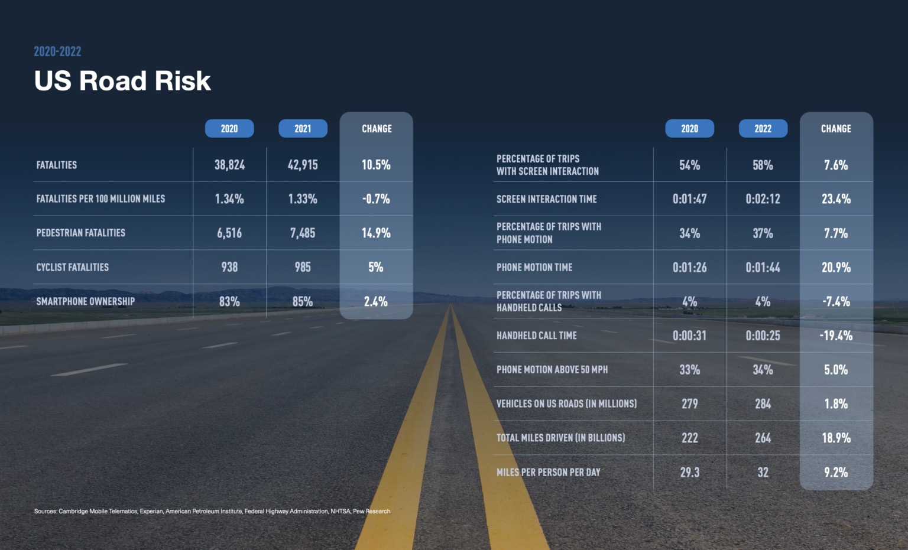

Download DC Driver on the App Store and the Google Play Store
Download on iOS Download on Android


About
This project is dedicated to developing and implementing innovative and impactful strategies to significantly decrease the occurrence of accidents resulting from distracted driving on the roads of Washington, D.C. Our primary goal is to elevate road safety standards, preserve lives, and alleviate the severe impacts of distracted driving. By identifying and employing cutting-edge technologies, pioneering measures, and effective policies, we aim to effectively deter hazardous driving behaviors and ensure a safer commuting environment for everyone.
Our innovative mobile applications for Android and iOS, developed with the support of the esteemed Howard University Transportation Research Center and incorporating the advanced technology of Cambridge Mobile Telematics (CMT), are at the forefront of transforming driver behavior in Washington, D.C. Our mission, which extends beyond the realm of technology, is driven by a commitment to save lives, significantly reduce distracted driving incidents, and establish the roads of Washington, D.C. as a paradigm of safety. Through our applications, we are not merely altering driving habits; we are actively contributing to the cultivation of a safer, more responsible driving culture for the benefit of all.
Join the movement towards safer roads in Washington, D.C. by downloading the DC Driver app today - your decision can make a lifesaving difference!
The Importance of DC Driver: Enhancing Road Safety in Our Community
CMT's The State of Distracted Driving in 2023 & the Future of Road Safety report is the most comprehensive research available on naturalistic distracted driving behaviors at scale. The report covers distraction behavior trends from 2020 through 2022 across the US, the progress of individual states, the impact of hands-free legislation, studies on how telematics reduces distraction, driver sentiment, how distraction influences crash rates, and more.
Download the App
DC Driver can be conveniently downloaded from both the iOS App Store and the Google Play Store, making it readily accessible for users of both Apple and Android devices.
The DC Driver Team


Babin Manandhar
Howard University Transportation Research Center
EIT Research Engineer
LinkedIn Profile


Nripendra Pradhan
Howard University Transportation Research Center
Research Engineer
LinkedIn Profile


Dr. Stephen Arhin
Howard University Transportation Research Center
Chair of Civil and Environmental Engineering